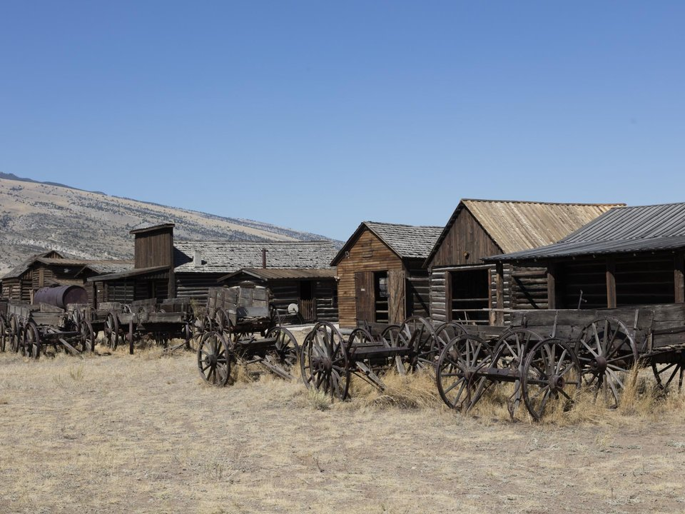

Downtown · Boutique hotel
The Chamberlin Inn
A restored 1903 inn where Hemingway stayed.
Official details for The Chamberlin InnRodeo nights and the road to Yellowstone.
Cody was founded by Buffalo Bill himself and still feels like the Old West, with a rodeo every summer night and the Irma Hotel he built for his daughter on Sheridan Avenue. Land at Yellowstone Regional, spend a morning at the Buffalo Bill Center of the West, a world-class complex of five museums, watch the Cody Nite Rodeo, and drive the Buffalo Bill Scenic Byway through the Wapiti Valley to Yellowstone’s East Entrance.

Time illustration: direct distance at 150 KTAS plus 15 minutes for departure and arrival, matching the discovery page. Use ForeFlight for your actual flight plan.
KCOD, Yellowstone Regional, is a non-towered airport at 5,102 feet with an 8,268-foot runway, about five minutes from downtown Cody.
Yellowstone Regional Airport, Cody, WY
Strong, gusty winds are common, and density altitude is high on summer afternoons. Landing fee for aircraft over 9,000 pounds. No live fuel price is shown.
Mountain flying: high density altitude on summer afternoons, mountain wave and strong winds over the ridges, afternoon thunderstorms from July to September, wildfire smoke in late summer, and winter snow and icing. Consider a mountain-flying course before you go. About 1530 nm from Myrtle Beach: two long days each way with several fuel stops. Plan a week, or overnight on the way out and back.
Rates and availability need travel dates. Summer books up early.
A restored 1903 inn where Hemingway stayed.
Official details for The Chamberlin InnBuffalo Bill’s 1902 hotel with a famous cherrywood bar.
Official details for The Irma HotelBuffalo Bill’s 1904 hunting lodge, two miles from Yellowstone.
Official details for Pahaska TepeeReserve weekend dinners.
Steaks and ribs downtown.
Official details for Wyoming’s Rib & Chop HouseBreakfast under the cherrywood bar.
Official details for The IrmaRestaurants in Cody.
Cody Chamber for More restaurantsGet to Yellowstone early to beat the crowds.
Five museums of Western art, history and natural history.
Center of the WestThis prototype links to the local visitor site. It does not yet match events to your travel dates.
Nightly rodeo.
Cody Rodeo for Cody Nite RodeoA big Fourth of July rodeo and parade.
Cody Rodeo for Cody StampedeThe road to the park is open.
NPS for Yellowstone East Entrance openCheck the local calendar when choosing a weekend, and confirm dates and tickets with the organizer.
A sample Cody weekend. This is a two-day flight each way; plan a week. No bookings or availability confirmed.
Land at KCOD mid-morning.
Lunch in town.
A short walk, then back to the airport.
Land at KCOD, subject to weather, density altitude and your actual flight plan.
Walk Sheridan Avenue and the Irma.
The Cody Nite Rodeo.
Drive to Yellowstone, early.
Yellowstone Lake and the canyon.
Dinner at the Rib & Chop House.
The Buffalo Bill Center of the West.
Compute takeoff performance and allow time at the FBO.
Mountain afternoons bring wind, turbulence and storms; leave early.
The main sight.
Explore.
Dinner in town.
These details make the difference between an appealing list and a usable getaway.
Lodging, then rodeo tickets.
About 1,530 nm from Myrtle Beach: two long days each way.
Expect gusty crosswinds.
June to September.
Picks and links reviewed by WingAway Weekends. Hours, prices, menus and availability change often, so confirm directly with each place before booking. Spotted something out of date, or have a favorite we missed? Email us at hello@wingawayweekends.com.
WingAway Weekends helps you discover the destination. Use ForeFlight and current official aviation information for route, performance, weather, NOTAMs and preflight decisions. Flight planning and PIC responsibility stay with the pilot.
One fly-in weekend, a Fly to Lunch pick and the newest guides, about once a month.
Free. Unsubscribe anytime.